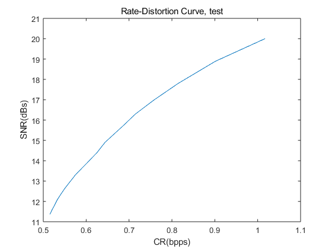

Question3
addpath('C:\Users\Admin\Desktop\DA\Image and Video Analysisi\coursework\data\');
inputimage=imread('test.bmp');
if ndims(inputimage)==3
inputimage=rgb2gray(inputimage);
else
inputimage=inputimage;
end
im=im2double(inputimage);
b=1;
[m,n]=size(im);
for i=0.15:0.05:1
imdct=blkproc(im,[8,8],'dctforward');
imcom=comthresholding(imdct,i);
imre=blkproc(imcom,[8,8],'dctbackward');
snr(b)=ImageSnr(im,imre);
imcode=Dle2(imcom);
codelen=length(imcode{1})+length(imcode{2});
cr1(b)=(codelen*8)/(m*n);
b=b+1 ;
end
figure; plot(cr1,snr);
title('Rate-Distortion Curve, test')
xlabel('CR(bpps)')
ylabel('SNR(dBs)')
